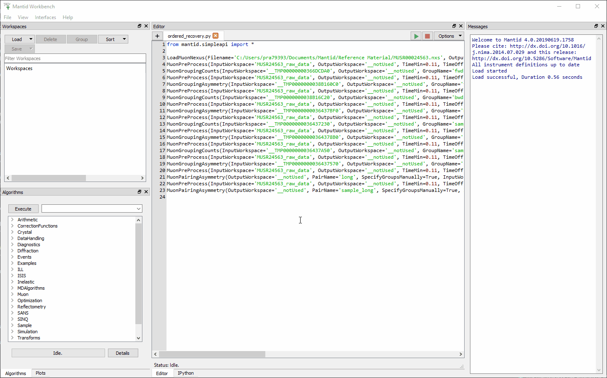
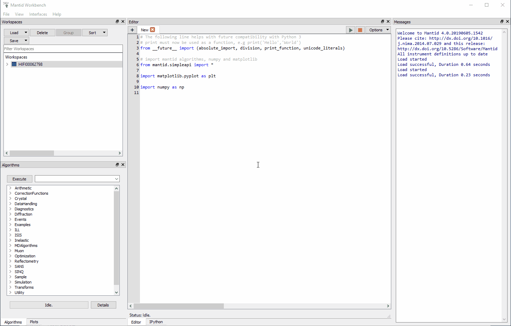
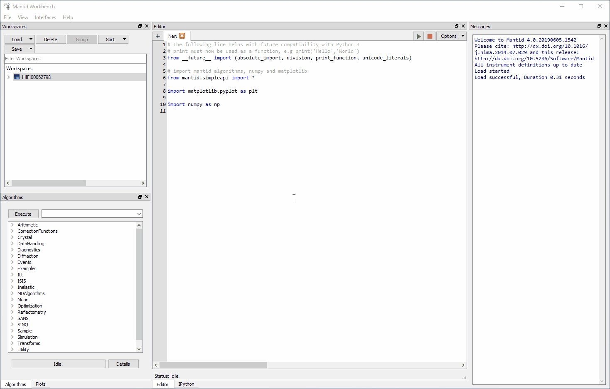
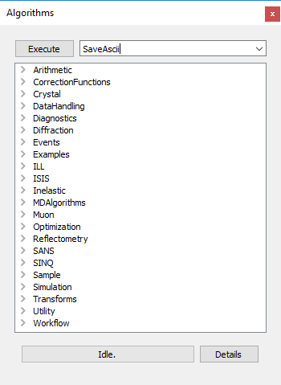
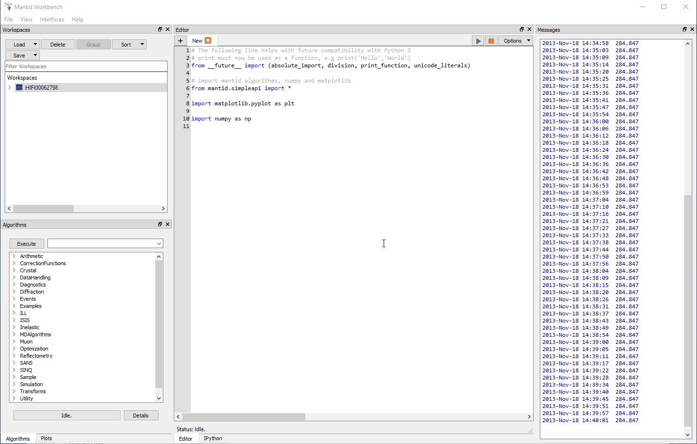
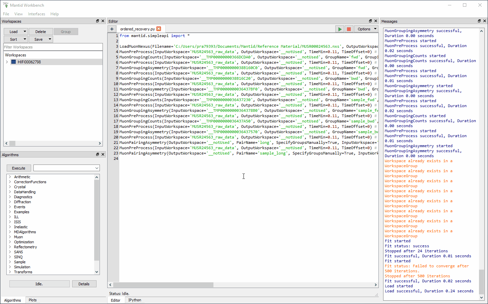
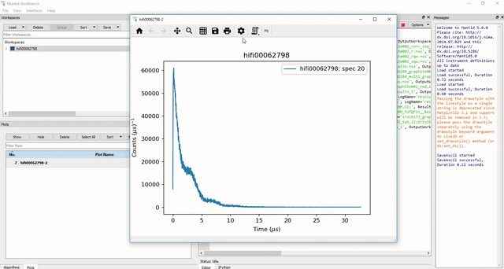
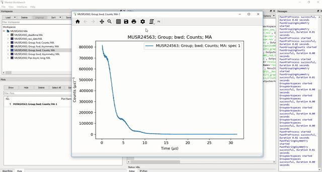
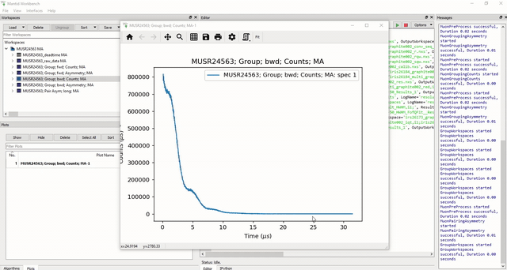

Other Mantid Functions and Basic Data Manipulation#
This section allows the user to:
Become familiar with the content of Mantid workspaces.
Learn how to read/export data.
Learn how to overlay data/change plot style.
Workspaces#
Workspaces hold the data in Mantid. They come in several forms, but the most common is the Matrix Workspace which represents XYE data for one or more spectra. In MantidWorkbench the data contained in a workspace can viewed as a matrix or a table, and graphed in many ways including Line graphs, and ‘colourful’ (contour) plots.
Interaction with workspaces is typically through an interface. Matrix Workspaces are typically created by executing one of Mantid’s ‘Load’ algorithms or are the output of algorithms which take a Matrix Workspace as input.
In addition to data, workspaces hold a workspace history, which details the algorithms which have been run on this workspace.
The Analysis Data Service (ADS), by default is found on the left-hand side of the main MantidWorkbench window. When a muon data set is loaded via the GUI, the Matrix Workspaces are created automatically.
NAME12345 MA which contains all the Muon Analysis data for run 12345 on the NAME instrument. This data is further separated into more sub-workspaces, these are listed below.
NAME12345 Raw Data MA, holds within it raw positron counts for each individual detector. To examine the data collected in a single detector, right click on workspace and select Plot Spectrum. There is one spectrum per detector. In the window that opens up, the number of the spectrum/detector to plot, or a range of spectra, can be selected.
NAME12345 Groups MA contains data in raw counts and asymmetry, collated into the groups specified in the Grouping tab of the interface (see the Grouping section in The Tabs - Grouping for more). Each workspace’s name contains the name of the group it holds data for.
NAME12345 Pairs MA these workspaces contain the Pairs (such as ‘long’ which is created by default) specified in the Grouping Options tab of the interface (see the Grouping section in The Tabs - Grouping for more). Each workspace’s name contains the name of the pair it holds data for.
Fitting Results MA contains the workspaces produced when data is fitted, the spectra and tables within are named with the convention NAME12345; Group/Pair Asym; Asymmetry; MA; Fitted; FunctionName. In order, the parts of these names correspond to: the data run, the group or pair fitted, the fact the data is asymmetry, that it is from Muon Analysis, that it has been fitted, and what function(s) were used. Data in Fitting Results MA is split into the following sub-workspaces:
Fitting Results_workspaces MA contains the spectra of fitted asymmetry data. These workspaces contain three spectra - the original data, the fit, and the difference between the two, which are assigned spectrum numbers 1, 2, and 3 respectively.
Fitting Results_parameter_tables MA contains tables of the parameters of the function used for a fit, along with their values and errors for that fit.
In general the muon analysis GUI hides workspaces from the user; however, an understanding of their functionality is sometimes useful to take advantage of some of the more advanced features of MantidWorkbench. In particular, for those seeking to develop a specialist analysis method, the GUI can be used for the initial data reduction, while user coded Python or C++ algorithms act on workspaces to process the final result. This type of hybrid workflow demonstrates the versatility of the MantidWorkbench interface.
Other types of object, such as Tables, Matrices and Notes, may be created through the MantidWorkbench interface. As these are not workspaces the Algorithms can’t directly be applied. However, Tables may be converted to either a Table or Matrix workspace through an option on the analysis menu for subsequent data processing.
Loading Data#
Matrix Workspaces are typically created by executing one of Mantid’s ‘Load’ algorithms or are the output of algorithms which take a Matrix Workspace as input. In addition to data, workspaces hold a workspace history which lists the algorithms that have been applied to the data.
To load a raw data file without using the Mantid Analysis GUI, and examine its content:
In the ADS, click Load>`File`
Load the file HIFI00062798.nxs from the Reference Material folder by using the Browse button - See Figure 4.

Figure 4: Loading the HIFI00062798.nxs data file into Mantid using the Browse button instead of the Analysis GUI.#
Workspace Information#
Click on the arrow beside the file name – this allows information about the format of data file to be viewed. The following should be seen in the Workspace List pane to the right of the screen.
It can be seen that a workspace called HIFI00062798 has been created. It
is a 2D array
of data that has been collected from a silver calibration measurement taken in a transverse field of 20G.
It contains 64 spectra (or histograms i.e. one for each HiFi detector)
there are 2048 time channels, or bins, per plot
However, the NeXuS format allows a lot more information be stored in a data file than that listed above. As an example right click on the file name and select Show Sample Logs. A list of experiment and instrument parameters that have been logged during a measurement, from magnetic fields to sample temperatures, appears.
To interrogate any of these logs double click on the Name, try this with Temp_Cryostat as shown in figure 5.

Figure 5: How to open the Sample Logs from the workspace and inspecting Temp_Cryostat.#
Plotting spectra#
As mentioned, the HIFI00062798.nxs workspace holds within it raw positron counts / bin for each individual HiFi detector. To examine the data collected in a single detector, right click on HIFI00062798 and select “Plot>Spectrum…” .
On HiFi, as way of example, there are 64 detectors hence ID numbers: 1-64 (1-32 = upstream detectors, 33-64 = downstream detectors.
Enter a detector (ID) number of choice and click OK to plot the associated raw data. This process is illustrated below.

Figure 6: How to plot an individual detector spectrum. This example shows spectrum 10 for the HIFI00062798 dataset.#
For information:
ARGUS has 192 detectors
MuSR and HIFI have 64 detectors
EMu has 96 detectors
Exporting Data#
To export the data contained within any listed workspace, the Algorithms tab at the bottom of the workspace list pane can be used.

Figure 7: The Algorithms Options#
Follow the instructions below to try this
Load the workspace HIFI00062798.nxs, see Loading Data for more on how to do this.
Using the drop-down menu next to the Execute button, type or select SaveAscii, then click Execute. This is shown in Figure 8.

Figure 8: Where to find the SaveAscii Algorithm.#
The SaveAscii Input Dialog box - shown in Figure 8 should appear. Select a directory (for the written data file) and specify a file name.
Note the workspace to be exported can be selected from the uppermost dropdown list, next to InputWorkspace, in this case let us leave it as HIFI00062798.
Define which workspace spectra to export using the WorkspaceIndexMin and WorkspaceIndexMax inputs. Use these to save spectra 10 and 11.
Choose the type of data separator used in the file (CSV is usually a reliable option), add comments and uncheck the WriteXError box.
Export the spectra.
Overlaying and Styling Plots#
Overlaying data plots can be useful when trying to compare two different sets of data simultaneously by having them on one individual plot. Overlaying data can be done by simply clicking and dragging a workspace onto an existing plot, or can be done via the Overlaying Data option from the workspace pane.
To try this follow these instructions:
Load the HIFI00062798 workspace and plot spectrum number 10 from the workspace panel, as described in Loading Data .
Go to the Plots menu by clicking the Plots tab (by default) in the bottom left of the window, and ensure that the plot of spectrum 10 is selected in bold.
Return to the ADS and right click on the HIFI00062798 workspace, as before going to Plot but this time selecting Overplot Spectrum… instead of Spectrum…. Plot spectrum 20.
Spectrum 20 should now be visible on the spectrum 10 plot along with the original data. This process is shown in Figure 9 below.

Figure 9: How to overlay one plot (detector 20) onto another (detector 10).#
Plot Styles#
The plot style a data set can be selected using the gear icon at the top of the plot window, this will open the Figure options menu.
To demonstrate changing a plot’s markers and curve colour follow these instructions:
Spectrum 20 of HIFI00062798 should already have been plotted, via the ADS. If not, do so now.
Click the settings (gear) icon above the plot, this will bring up a new Figure options window for the data set.
Go to the Curves tab and use the Color (RGBA) option under Line to change the colour from Blue to Red. Click on the coloured square to change it.
Click Apply to view the changes and save the selected option.
To change the marker style (by default none are shown) use the Style drop-down menu under the Marker tab, use this now to change the Marker Style to square. Then click Apply.

Figure 10: How to change the line colour and marker style of a plot.#
Editing Axes#
One can also change the axis settings, such as the maximum and minimum values, and plotting against a logarithmic scale. The axis limits can be changed either through the Figure options menu, or by double clicking on the relevant axis, while other . See the instructions below for an example on how to change the X-Axis limits and set the Y-Scale to logarithmic.
Load the MUSR00024563 dataset using the muon analysis GUI. How to do this is described in the Home section of The Tabs - Home.
Plot the backwards counts from the ADS.
Open the Figure options’ menu, or or double click on the X axis to edit the axis.
In the Axes tab of the Figure options, set the value in the box labelled Upper Limit to 16 or do the same for the box labelled Max in the Edit axis dialog.
Press Apply, or click the OK button.
In the Axis tab of the figure options, click the y button. Then use the Scale drop-down menu and change the setting to log. Or double click on the Y axis of the plot and tick the box labelled ‘Log’.
Click OK and observe the changes to the plot, this process is shown for the Figure options and Edit axis in Figures 11 and 12 respectively.

Figure 11: Changing the X-Axis scale limits and setting the Y-Axis to logarithmic settings using the Figure options menu.#

Figure 12: Changing the X-Axis scale limits and setting the Y-Axis to logarithmic using the Edit axis dialog. Note that if the scale limits include negative values when doing this, Mantid will automatically use a ‘symmetrical log’ scale, which allows for negative values by having a range around 0 where the scale is linear not logarithmic.#